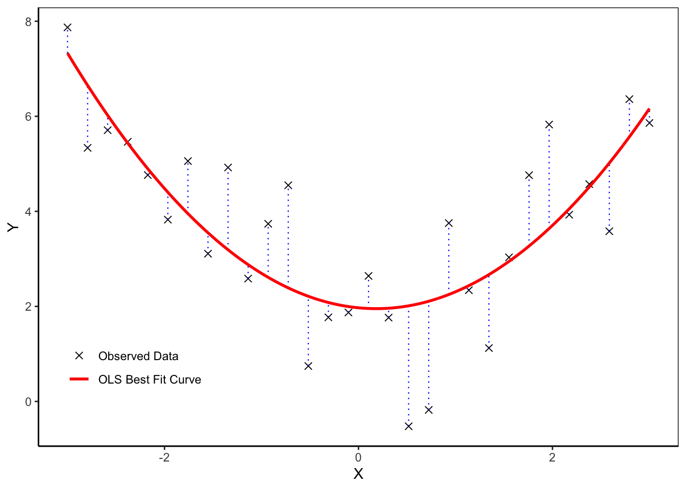

The Linear Regression Model and its OLS Estimation
Linear Regression
A detailed discussion of the linear regression model and the ordinary least squares (OLS) estimation method for its parameters.
Published
August 31, 2025
Random Sampling Framework
We are interested in datasets of the form \(\{y_{i}, x_{i1}, \ldots, x_{iK}\}_{i=1}^n\) where \(y_{i}\) is the outcome and \(x_{i1}, \ldots, x_{iK}\) are the regressors. To mathematically formalize how this data was generated, we view the observations as realizations of random variables that are drawn from some joint distribution \(F\), also called the data generating process (DGP). The random sampling assumption is one possible characterization of these draws.
Assumption 1. Random Sampling
The observations \(\{y_i, x_{i1}, \ldots, x_{iK}\}^n_{i=1}\) are realizations of the random variables \(\{Y_i, X_{i1}, \ldots , X_{iK}\}_{i=1}^n\), which are independent and identically distributed (i.i.d) draws from the joint distribution \(F(Y,X_1, \ldots, X_K)\).
It’s easy to get confused about the notation and terminology here, so let’s clarify. The random variables \(Y, X_1, \ldots, X_K\) are theoretical objects that are used when talking about the data generating process in general. The random variables \(Y_i, X_{i1}, \ldots, X_{iK}\) are the theoretical objects that correspond to each observation in the sample. Intuitively, we can think of these as the data before it was collected. The realizations \(y_i, x_{i1}, \ldots, x_{iK}\) are the actual data (numbers) we observe after data collection. This abstraction allows us to use the tools of probability theory and mathematical statistics to infer from our dataset.1
Defining the Linear Regression Model
Recall that a statistical model is simply a set of assumptions about some DGP. In the case of the linear regression model, we are interested in the joint distribution \(F(Y, X_1, \ldots, X_K)\). Under the random sampling assumption, however, each observation \(Y_i, X_{i1}, \ldots X_{iK}\) is an i.i.d draw from \(F\). This means that we can just as well frame our assumptions in terms of the random variables \(\{Y_i, X_{i1}, \ldots, X_{iK}\}_{i=1}^n\). As we will see, this formulation of the model is useful because it allows us to use matrix algebra to derive the estimator for the parameters.
Assumption 2. The Linear Regression Model
(A)(Linearity) The outcome \(Y_i\) is a linear combination of the regressors \(X_{i1}, \ldots, X_{iK}\), plus some random error\(e_i\) that captures measurement error and idiosyncratic fluctuation in \(Y_i\): \[
Y_i = \beta_1X_{i1} + \ldots + \beta_kX_{iK} + e_i \quad \forall \, i = 1, \ldots, n.
\tag{1}\]
(B)(No Multicollinearity) None of the regressors are an exact linear combination of each other.
(C)(Strict Exogeneity) The error \(e_i\) has a conditional mean of zero given the regressors of all observations \[
\mathbb{E}[e_i \mid \boldsymbol{X}_1 \ldots , \boldsymbol{X}_n] = 0 \quad \forall \, i = 1, \ldots, n
\tag{2}\] where \(\boldsymbol{X}_i = (X_{i1}, \ldots, X_{iK})'\).
For notational compactness, it is useful to recast the model in matrix notation. First note that we can stack Equation 1 as a system of \(n\) equations
Now, we can collapse this system of equations into a single matrix equation: \[
\boldsymbol{Y} = \mathbf{X}\boldsymbol{\beta} + \boldsymbol{e},
\tag{3}\] where \[
\boldsymbol{Y} = \begin{pmatrix} Y_1 \\ \vdots \\ Y_n \end{pmatrix} \in \mathbb{R}^{n \times 1}, \quad \boldsymbol{e} = \begin{pmatrix} e_1 \\ \vdots \\ e_n \end{pmatrix} \in \mathbb{R}^{n \times 1}, \quad \mathbf{X} = \begin{pmatrix} \boldsymbol{X}_1' \\ \vdots \\ \boldsymbol{X}_n' \end{pmatrix} = \begin{pmatrix} X_{11} & \ldots & X_{1K} \\ \vdots & \ddots & \vdots \\ X_{n1} & \ldots & X_{nK} \end{pmatrix} \in \mathbb{R}^{n \times K}.
\]
The quantity \(\mathbf{X}\) is called the design matrix. 2
Interpreting the Assumptions
It is good practice to carefully think through what is being assumed in any given model. The linearity assumption in Equation 1 and Equation 3 states that (i) the functional form of the relationship between the outcome and regressors is linear in the parameters, and (ii) the error is additive.
The assumption of no multicollinearity ensures that the design matrix \(\mathbf{X}\) has full column rank.3 This in turn means the square matrix \(\mathbf{X}'\mathbf{X}\) is invertible, which is a crucial property when deriving the ordinary least squares (OLS) estimator for the parameters.
The strict exogeneity assumption states that the conditional expectation of the error given the regressors of all observations is zero. This is a crucial assumption of the model, and has several implications:
The unconditional mean of the error is zero: \[
\mathbb{E}[e_i] \overset{(a)}{=} \mathbb{E}[\mathbb{E}[e_i \mid \mathbf{X}]] \overset{(b)}{=} 0 \quad \forall \, i = 1, \ldots, n,
\tag{4}\] where \((a)\) uses the law of iterated expectations and \((b)\) follow from Equation 2. Also, since the conditional mean equals the unconditional mean, the error \(e_i\) is mean independent of the regressors \(\boldsymbol X_1, \ldots, \boldsymbol X_n.\)
The error is orthogonal to the regressors of all observations: \[
\begin{align}
\mathbb{E}[X_{jk}e_i]
&\overset{(a)}{=} \mathbb{E}\big[\mathbb{E}[X_{jk}e_i \mid X_{jk}]\big] \\
&\overset{(b)}{=} \mathbb{E}\big[X_{jk} \mathbb{E}[e_i \mid X_{jk}]\big] \\
&\overset{(c)}{=} 0 \quad \quad \quad \quad \quad \quad \quad \quad \forall \, i,j = 1, \ldots, n; k = 1, \ldots, K,
\end{align}
\tag{5}\] where \((a)\) uses the law of iterated expectations, \((b)\) uses the linearity of expectations, and \((c)\) follows from the fact that \[
\mathbb{E}[e_i \mid X_{jk} ]= \mathbb{E}\big[\mathbb{E}[e_i \mid \mathbf{X} ] \mid X_{jk}\big] =0
\] by the generalized law of iterated expectations.
The error is uncorrelated with the regressors of all observations: \[
\text{Cov}(e_i, X_{jk})
\overset{(a)}{=} \mathbb{E}[X_{jk}e_i] - \mathbb{E}[X_{jk}]\mathbb{E}[e_i]
\overset{(b)}{=} \mathbb{E}[e_iX_{jk}]
\overset{(c)}{=} 0
\quad \forall \, i,j,k,
\tag{6}\] where \((a)\) is the definition, \((b)\) uses Equation 4, and \((c)\) uses Equation 5. Intuitively, this means the error term and regressors do not contain any information about one another.
The conditional expectation of \(\boldsymbol{Y}\) given \(\mathbf{X}\), called the regression of \(\boldsymbol{Y}\) on \(\mathbf{X}\), is a linear function of the realized values: \[
\mathbb{E}[\boldsymbol{Y} \mid \mathbf{X}] = \mathbb{E}[\mathbf{X}\beta + \boldsymbol{e} \mid \mathbf{X}]=\mathbb{E}[{\mathbf{X}\beta \mid \mathbf{X}}]=\mathbf{X}\beta.
\]
Restrictiveness of the Assumptions
The linearity and no-multicollinearity assumptions are non-trivial in the sense that it is possible for a dataset to violate them. The assumption that the conditional mean of the error is a constant function is also non-trivial, but the fact that this constant equals zero is trivial (i.e. not restrictive) if the linear regression model is of the form \[
Y_i = \beta_1 + \beta_2X_{i2} + \ldots + \beta_kX_{iK} + e_i \quad \forall \, i = 1, \ldots, n.
\tag{7}\]
In Equation 7, we set the first regressor to equal one for all observations and thus obtain a constant intercept term\(\beta_1\) in the model. In this setting, if the conditional mean of the error is some non-zero constant \(\mu\), we can simply redefine the intercept term to be \(\beta_1^\star = \beta_1 + \mu\) and the error to be \(e_i^\star = e_i - \mu\). Then, the conditional mean of the new error \(e_i^\star\) is zero:
For this reason, it is generally recommended to include a constant intercept term in the linear regression model.
Implications of Random Sampling
Random sampling has two key implications for the linear regression model. First, it implies that the errors are independent (and therefore uncorrelated) across observations. To see this, first note that under random sampling
\[
(Y_i, \boldsymbol{X}_i) \perp (Y_j, \boldsymbol{X}_j) \quad \forall \, i \neq j.
\] Since independence is preserved under functional transformations, and the error is a function of the outcome and regressors, \[
e_i = f(Y_i, \boldsymbol{X}_i) = Y_i - \boldsymbol{X}_i\boldsymbol{\beta} \quad \forall \, i = 1, \ldots, n,
\]
it follows that the errors \(e_i\) are independent across observations.
A second implication is that random sampling allows us to simplify the strict exogeneity assumption. Specifically, since random sampling implies4
\[
(e_i, \boldsymbol{X}_i) \perp (\boldsymbol{X}_j) \quad \forall \, i \neq j,
\] it follows that
\[
\mathbb{E}[e_i \mid \boldsymbol{X}_1, \ldots, \boldsymbol{X}_n] = \mathbb{E}[e_i \mid \boldsymbol{X}_i] \quad \forall \, i = 1, \ldots, n.
\]
Thus, under random sampling, the strict exogeneity assumption is equivalent to the simpler assumption
\[
\mathbb{E}[e_i \mid \boldsymbol{X}_i] = 0 \quad \forall \, i = 1, \ldots, n.
\]
Intuitively, random sampling eliminates any cross-sectional dependence between the error term and the regressors of other observations. As a result, the linear regression model only needs to assert that each error \(e_i\) is mean independent of its own regressors \(\boldsymbol{X}_i\).
What is NOT Assumed
Before proceeding, it is worth clarifying what we do not assume in the linear regression model. First, we do not assume that \(Y\) is a linear function of \((X_1, \ldots, X_k)\) in Equation 1; we only require that the parameters \(\boldsymbol{\beta}\) enter the equation linearly. This means that we are free to include non-linear transformations of the regressor variables in Equation 1 as long as linearity in \(\boldsymbol{\beta}\) is preserved (see Equation 10 for an example). Second, we make no assumptions about the distribution of the covariates. Third, we do not make assumptions about the distribution or variance of the error term \(e\).
Ordinary Least Squares (OLS) Estimation
Principle of OLS
Recall that an estimation method is the guiding principle we follow to construct an estimator — a function that maps the data to the parameters of a statistical model. One common estimation method for the linear regression model is the principle of ordinary least squares (OLS). This method finds the parameter values that minimize the sum of squared differences between the observed outcomes and the part of the outcome explained by the regressors. Formally, the ordinary least squares estimator\(\hat{\boldsymbol{\beta}}_{OLS}\) is defined as the solution of the quadratic minimization problem
The quantity \(S(\boldsymbol\beta)\) is called the sum of squared errors (SSE). Intuitively, the motivation behind OLS is to choose the parameters such that the fitted outcomes of the form \(\hat{Y}_i = \boldsymbol X_i' \hat{\boldsymbol\beta}\) lie as close as possible to the observed outcomes \(Y_i\) in terms of their total squared vertical distance. This is visualized in Figure 2 below.
Deriving the OLS Estimator
We choose the OLS estimator to be the solution to the minimization problem in Equation 8. In other words, it is the estimator that satisfies the first-order condition (FOC).5 Using matrix algebra and calculus, the FOC is given by \[
\begin{aligned}
\frac{\partial}{\partial \boldsymbol\beta}S(\boldsymbol\beta)
&\overset{(a)}{=} \frac{\partial}{\partial \boldsymbol\beta}\big( \boldsymbol Y'\boldsymbol Y-\boldsymbol Y'\boldsymbol X\boldsymbol \beta - (\boldsymbol X \boldsymbol \beta)'\boldsymbol Y + (\boldsymbol X \boldsymbol \beta)'(\boldsymbol X \boldsymbol \beta) \big) \\
&\overset{(b)}{=} \frac{\partial}{\partial \boldsymbol\beta} \big( \boldsymbol Y'\boldsymbol Y - \boldsymbol Y' \boldsymbol X \boldsymbol \beta - \boldsymbol\beta ' \boldsymbol X' \boldsymbol Y + \boldsymbol \beta' \boldsymbol X' \boldsymbol X \boldsymbol \beta \big) \\
&\overset{(c)}{=} \frac{\partial}{\partial \boldsymbol\beta} \big( \boldsymbol Y'\boldsymbol Y - \boldsymbol Y' \boldsymbol X \boldsymbol \beta - (\boldsymbol Y' \boldsymbol X \boldsymbol \beta)' + \boldsymbol \beta' \boldsymbol X' \boldsymbol X \boldsymbol \beta \big) \\
&\overset{(d)}{=} \frac{\partial}{\partial \boldsymbol\beta} \big( \boldsymbol Y'\boldsymbol Y - 2(\boldsymbol Y' \boldsymbol X \boldsymbol \beta) + \boldsymbol \beta' \boldsymbol X' \boldsymbol X \boldsymbol \beta \big) \\
&\overset{(e)}{=} -2 \boldsymbol X' \boldsymbol Y + 2 \boldsymbol X' \boldsymbol X \boldsymbol \beta. \\
&= 0,
\end{aligned}
\]
where \((a)\) expands Equation 8, \((b)\) follows from \((\boldsymbol X \boldsymbol \beta)' = \boldsymbol \beta' \boldsymbol X'\), \((c)\) follows from \((\boldsymbol Y' \boldsymbol X \boldsymbol \beta)' = \boldsymbol \beta' \boldsymbol X' \boldsymbol Y\), \((d)\) uses the fact that the scalar \(\boldsymbol Y' \boldsymbol X \boldsymbol \beta\) equals its transpose, and \((e)\) applies the following matrix calculus results:
\[
\frac{\partial}{\partial \boldsymbol b}(\boldsymbol a' \boldsymbol b) = \boldsymbol a \quad \text{and} \quad \frac{\partial}{\partial \boldsymbol b}(\boldsymbol b' \boldsymbol A \boldsymbol b) = 2\boldsymbol A\boldsymbol b,
\] for any conformable vectors \(\boldsymbol a, \boldsymbol b\) and any conformable symmetric matrix \(\boldsymbol A\).
Rearranging the FOC above, we see that the OLS estimator satisfies the least squares normal equations\[
\boldsymbol X' \boldsymbol X \hat{\boldsymbol \beta}_{OLS} = \boldsymbol X' \boldsymbol Y.
\] Since the matrix \(\boldsymbol X' \boldsymbol X\) is invertible, we have the the following closed form representation of the OLS estimator
The phrase “OLS fits the best line to the data” is often used to describe what the OLS estimator does. However, this language is a bit loose and perpetuates the common misconception that the least squares estimation method can only fit a straight line to the data. In reality, the functional form of the relationship between \(Y\) and \(X\) is entirely determined by the researcher’s choice of regressors to include when specifying the model. Least squares simply chooses the linear combination of those regressors that best fits the data in terms of minimizing the total squared vertical distance to the observed outcomes.
Let’s walk through a simple example to illustrate this point. Suppose we observe the following dataset:
Figure 1: Observed Data with Nonlinear Relationship Between Outcome and Regressor
The scatter plot in Figure 1 suggests that the functional form of the relationship between \(Y\) and \(X\) is approximately a quadratic function. Thus, we can specify the linear regression model as \[
Y = \beta_1 + \beta_2 X + \beta_3 X^2 + e.
\tag{10}\]
The next step is to estimate the parameters \(\beta_1, \beta_2, \beta_3\) using the principle of ordinary least squares. We can do this using the lm function in R.
fit <-lm(Y ~ X +I(X^2), data = df)print(fit)
Call:
lm(formula = Y ~ X + I(X^2), data = df)
Coefficients:
(Intercept) X I(X^2)
1.9706 -0.1942 0.5306
These numbers correspond to what we would get if we applied Equation 9 to the data.
The benefit of using the lm function is that it also can report inferential statistics — such as, the p-value, standard error, etc. — for the estimates. The meaning of these quantities is discussed in this post.
summary(fit)
Call:
lm(formula = Y ~ X + I(X^2), data = df)
Residuals:
Min 1Q Median 3Q Max
-2.5348 -0.4087 -0.1239 0.7664 2.1883
Coefficients:
Estimate Std. Error t value Pr(>|t|)
(Intercept) 1.97058 0.34115 5.776 3.82e-06 ***
X -0.19420 0.12688 -1.531 0.138
I(X^2) 0.53056 0.07935 6.686 3.54e-07 ***
---
Signif. codes: 0 '***' 0.001 '**' 0.01 '*' 0.05 '.' 0.1 ' ' 1
Residual standard error: 1.245 on 27 degrees of freedom
Multiple R-squared: 0.6354, Adjusted R-squared: 0.6084
F-statistic: 23.53 on 2 and 27 DF, p-value: 1.216e-06
Finally, we can visualize the estimation results. In Figure 2, the black crosses are the observed data points, the red curve is a plot of the fitted function \[
\hat{Y}_i = \hat{\beta}_1 + \hat{\beta}_2 X_i + \hat{\beta}_3 X_i^2
\]
in the \(X-Y\) plane, and the vertical dotted lines represent the residuals \(e_i = Y_i - \hat{Y}_i\).
Show code
# Fitted valuesdf$Yhat <-fitted(fit)# Smooth curve for plotting (only over observed range)xg <-seq(min(df$X), max(df$X), length.out =400)grid <-data.frame(X = xg)grid$Yhat <-predict(fit, newdata = grid)# Plotggplot(df, aes(X, Y)) +geom_point(aes(color ="Observed Data"), shape =4, size =2) +geom_segment(aes(x = X, xend = X,y =pmin(Y, Yhat), yend =pmax(Y, Yhat)),linetype ="dotted", linewidth =0.4, color ="blue") +geom_line(data = grid, aes(y = Yhat, color ="OLS Best Fit Curve"), linewidth =1) +scale_color_manual(values =c("Observed Data"="black","OLS Best Fit Curve"="red"),breaks =c("Observed Data", "OLS Best Fit Curve"),name =NULL) +labs(x ="X", y ="Y") +coord_cartesian(xlim =range(df$X)) +# avoid accidental extrapolationtheme_classic() +theme(panel.border =element_rect(color ="black", fill =NA)) +theme(legend.position =c(0.15, 0.18),legend.background =element_blank(),legend.key =element_blank() )
Warning: A numeric `legend.position` argument in `theme()` was deprecated in ggplot2
3.5.0.
ℹ Please use the `legend.position.inside` argument of `theme()` instead.

Figure 2: OLS Estimation for Linear Regression Model with Quadratic Regressor
References
Hansen, Bruce E. 2022. Econometrics. Princeton University Press.
Hayashi, Fumio. 2000. Econometrics. Princeton University Press.
Footnotes
This post discuses the big picture intuition for statistical modeling and inference in more detail.↩︎
There is some notational ambiguity here. Any bold, italicized letter represents a vector. Any bold, upright letter represents a matrix. So, \(\boldsymbol{X}_i\) refers to the vector of random regressor variables \((X_{i1}, \ldots, X_{ik})\), while \(\mathbf{X}\) refers to the design matrix.↩︎
Because in any given row of the design matrix, the column entries are linearly independent of one another.↩︎
This is again because \((e_i, \boldsymbol X_i)\) and \(\boldsymbol X_j\) are simply functional transformations of the outcome and regressors.↩︎
Technically we have to also check the second order condition as well. But this follows from the fact that \(\boldsymbol{X}\) has a full column rank, and so \(\boldsymbol X' \boldsymbol X\) is positive definite.↩︎